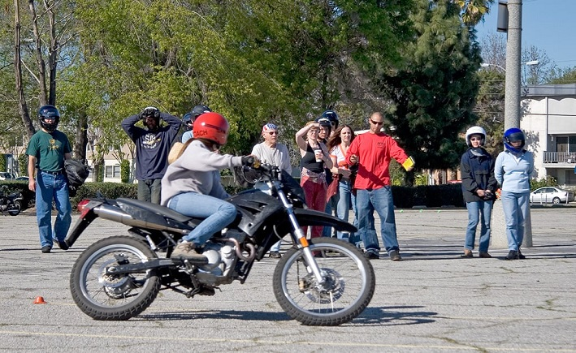

Level 1 Riders
So you've made the decision to ride. Level 1 courses offer the basics of motorcycling and rider safety skills at a pace that is appropriate for new riders, or riders returning to motorcycling. In general, this is a two or three day class providing approximately six hours of classroom instruction and ten hours of practical range exercises. Classroom sessions cover important topics for beginner riders and information to help you pass the Washington motorcycle permit knowledge test. Range exercises include starting, stopping, shifting, riding in a straight line, cornering, swerving, and quick stops. Training motorcycles are provided and permit testing is included with this level of instruction. Obtaining a permit is the first step toward qualifying for motorcycle endorsement in Washington.
The following are courses in Western Washington which align with Level 1:
- Washington Motorcycle Safety Training Beginner Permit Course
- Cascade Motorcycle Safety Basic Rider Course
- SW Motorcycle Safety Learn To Ride Novice Training

Here a coach is demonstrating a cornering technique. At speeds greater than 12 mph, we countersteer. To turn left we look left, press on the left side of the handlebar, lean left, and go left. To turn right we look right, press on the right side of the handlebar, lean right, and go right.